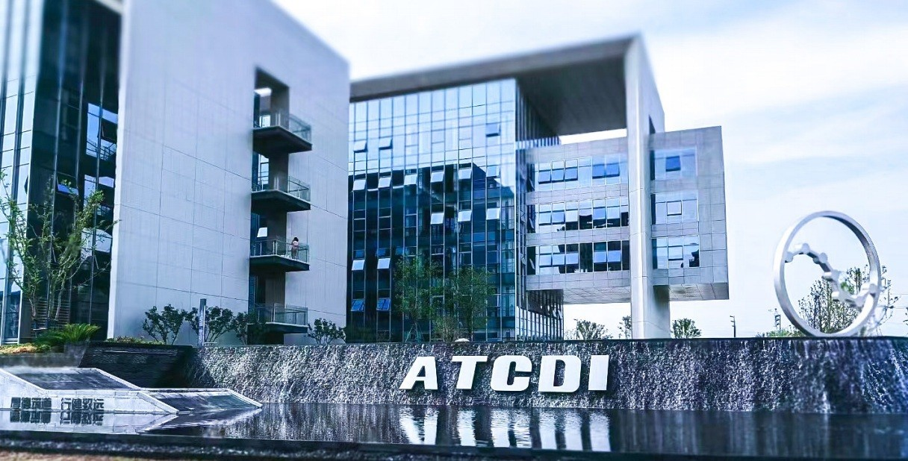

黄山
呈坎旅游集散服务区
交旅融合 / 安徽 · 黄山
ATCDI
城市空间与园林分院
美好景观践行者
项目案例
全部项目04 个精选项目
PROJECTS TO COME
项目内容待填充
该类型的项目将陆续收录。

ABOUT US
美好景观
践行者.
城市空间与园林分院
关注生态环境与人居环境的持续改善，提供项目策划、综合规划、景观设计到项目落地的一体化专业服务。
NEWS & INSIGHTS
院内动态.
QUALIFICATIONS & HONORS
资质荣誉
400+国家、部、省级优秀工程勘察、设计、咨询奖和科技进步奖
100+各类授权专利